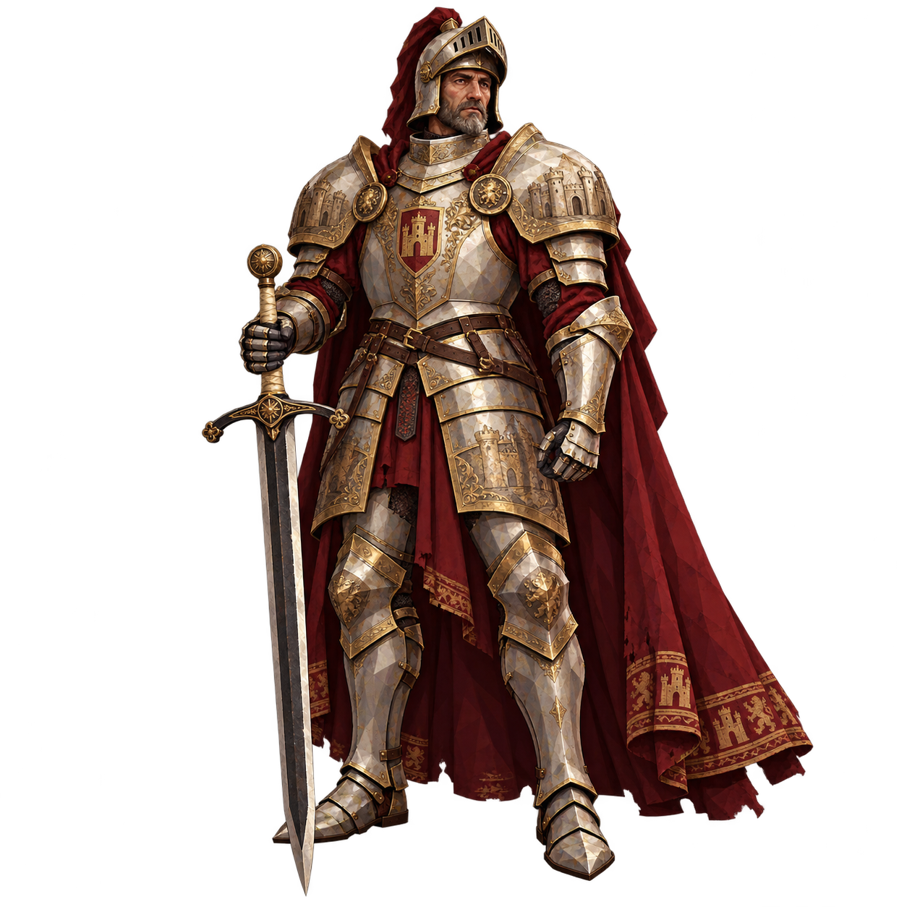
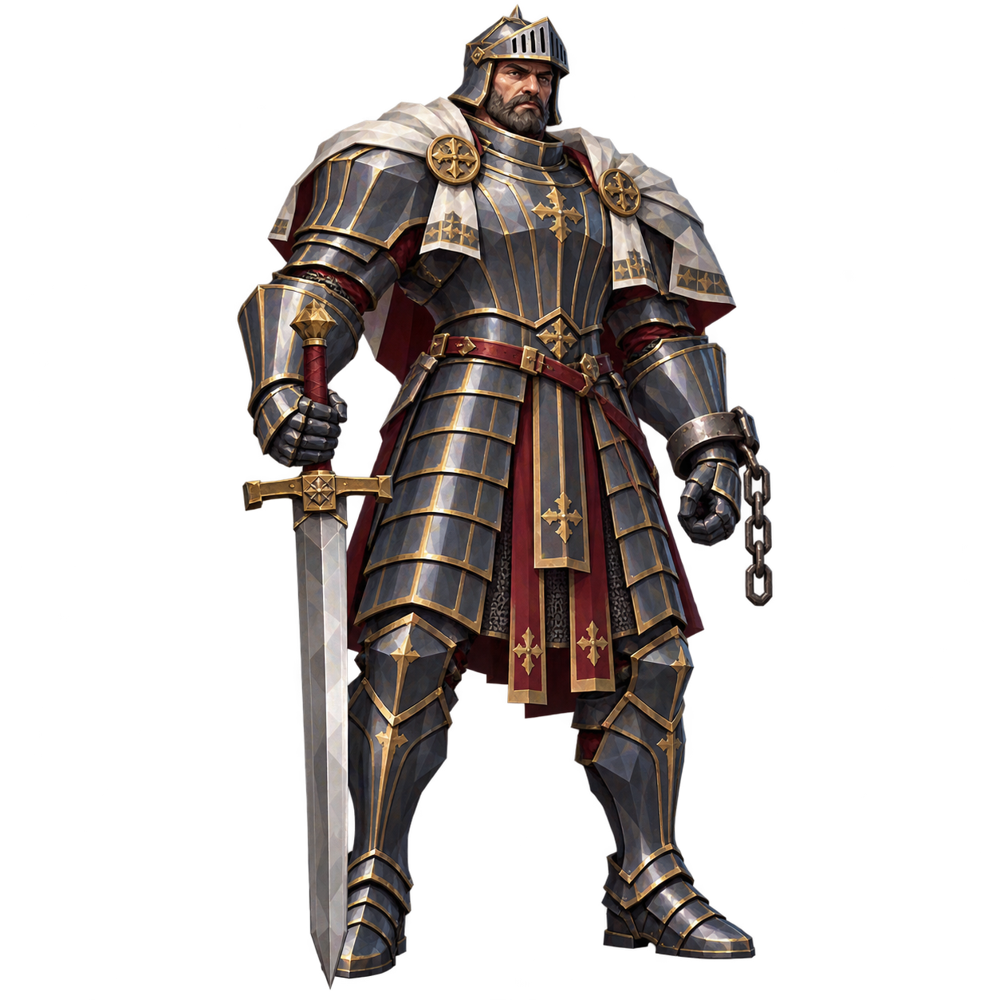
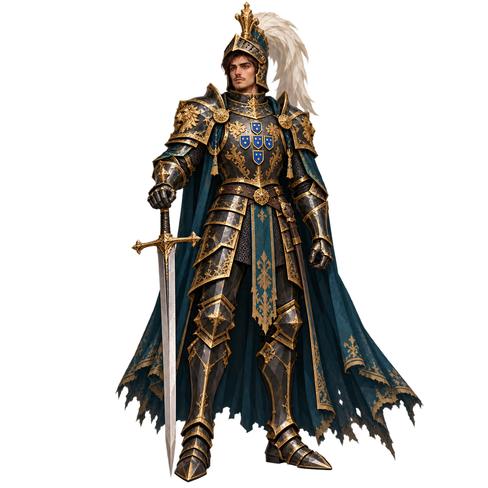

세 인물의 전신 콘셉트 시안입니다. 이미지를 누르면 투명 배경 원본을 크게 볼 수 있습니다.
전승에서 출발해 Stillness의 중갑 보스로 각색했습니다. 아직 게임 모델이나 능력치는 확정하지 않았습니다.

1. 추방된 개선장군
엘 시드에서 착안상아빛 판금 · 옛 금장 · 포도주색 망토
갑옷에 남은 성문과 전쟁의 부조. 왕에게 쫓겨났어도 떼어 내지 못한 문장. 티소나와 한 벌로 이어지는 노장입니다.

2. 사슬의 영웅
베르나르도 델 카르피오에서 착안청회색 강철 · 깊은 금장 홈 · 끊어진 족쇄
아버지를 구하려 했으나 끝내 죽은 뒤에야 돌려받은 영웅. 넓은 어깨와 전완, 짧은 의장 망토로 압도적인 체격을 강조했습니다.

3. 안개에서 돌아온 왕
세바스티앙의 귀환 전설에서 착안검은 판금 · 청록 의장 천 · 회백색 깃털
군대는 사라지고 왕만 돌아왔다는 게임용 이야기. 젊은 얼굴, 높은 투구와 긴 망토로 화려하지만 불길한 왕을 그렸습니다.
엘 시드와 베르나르도에 적용한 완전 판금은 당대 복식 복원이 아닌 게임용 각색입니다. 세 원본은 같은 정사각형 해상도로 보존했습니다.